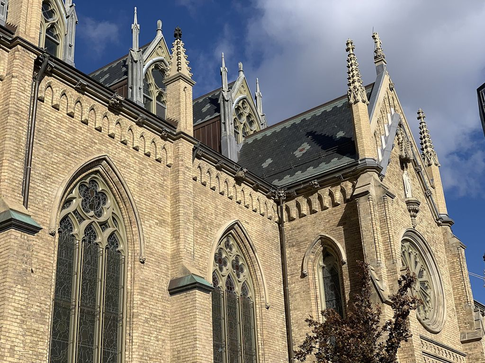
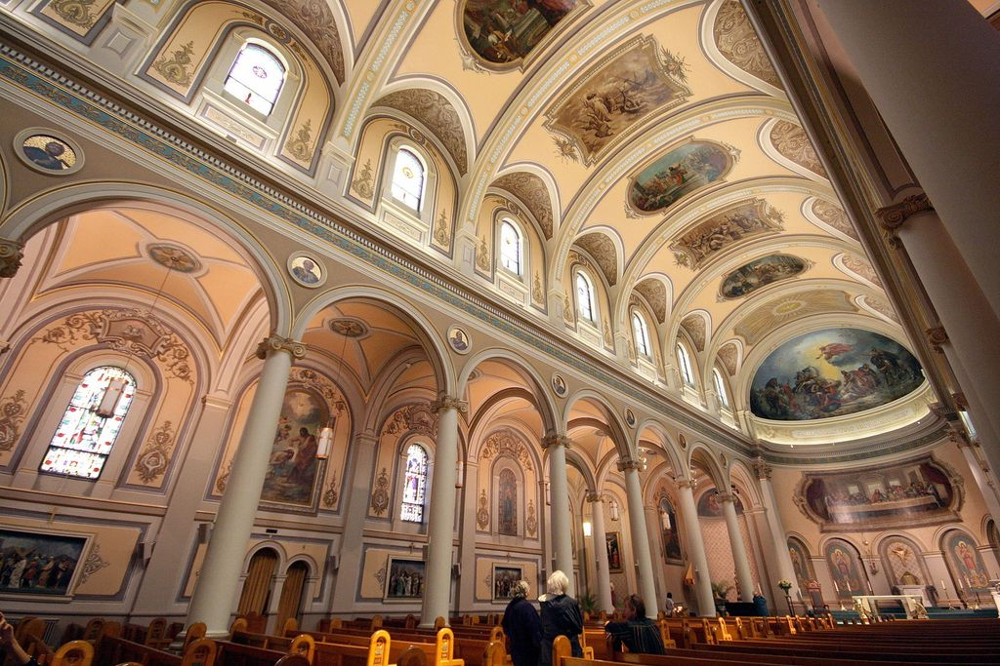
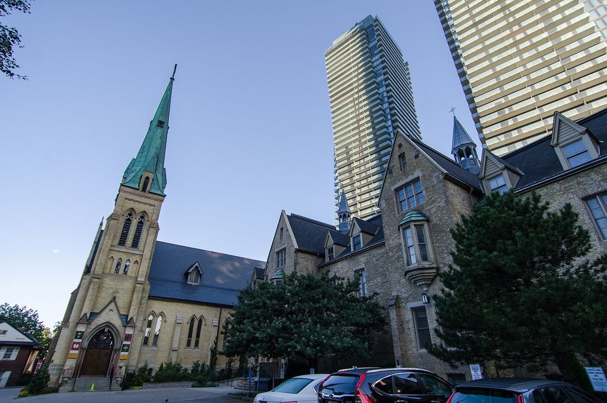
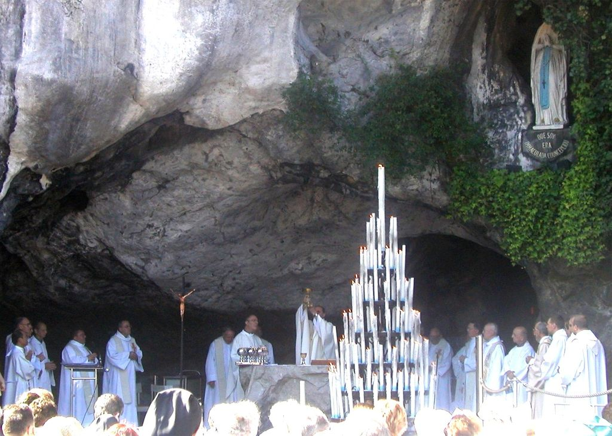
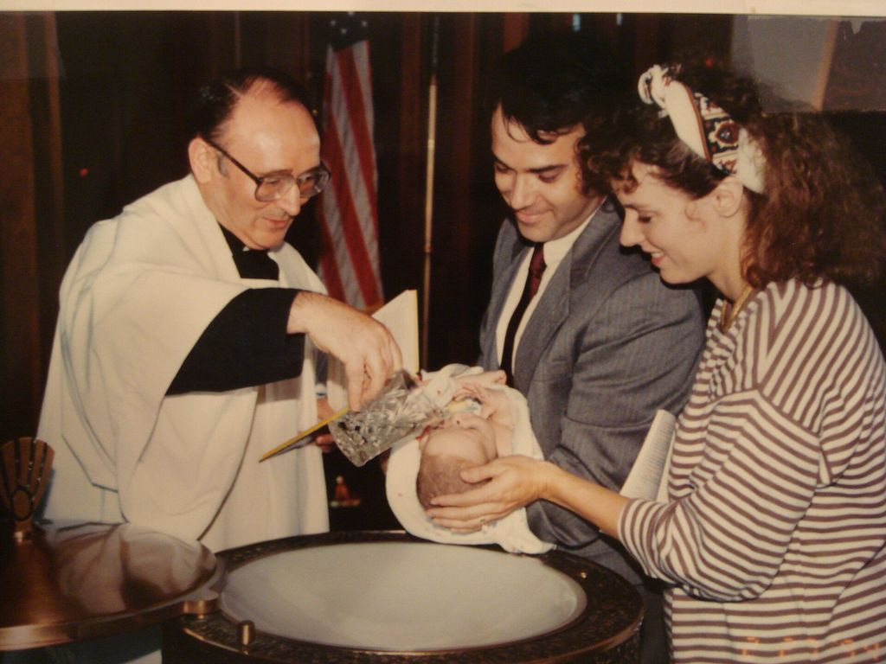
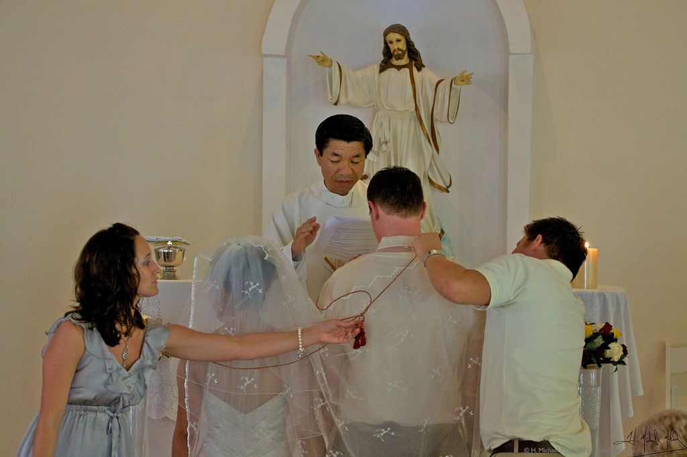
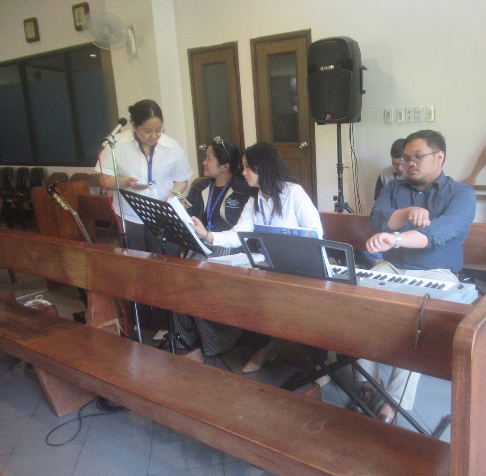
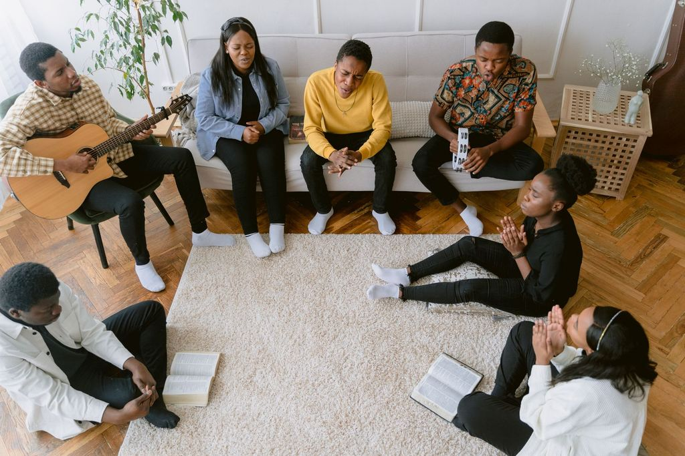
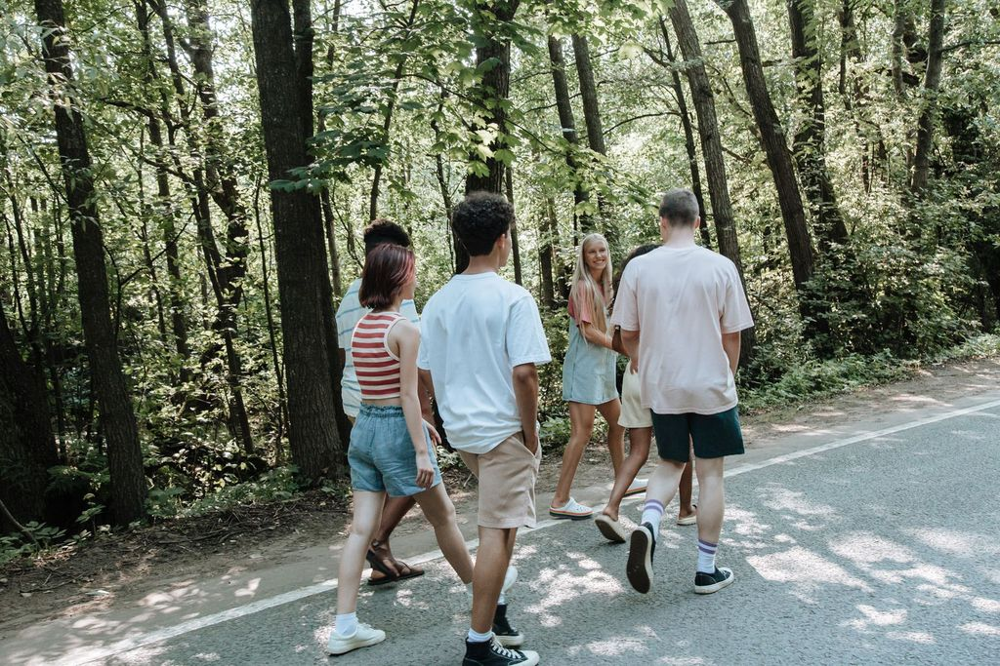

A parish is easier to show than to describe. The pictures below are grouped by theme so that you can see the church itself, what happens at the altar, the sacraments that mark a family's life, and the ordinary Sundays and Friday nights that make up most of what we do. The gallery grows through the year; if you have taken a good photograph at a parish event and are happy for us to use it, send it to office@stcolumbatoronto.ca with the date and the names of anyone pictured who has agreed to appear.
Gallery
Our church
Built in 1961 and restored for the golden jubilee, the church seats 540 beneath a tall brick nave and stained glass gathered over sixty years.




Gallery
Liturgy
Seven Masses every weekend, Adoration on Thursdays, and the choir at eleven o'clock. See the schedule or join us on the livestream.



Gallery
Sacraments
Roughly sixty baptisms, ninety First Communions and Confirmations, and twenty weddings a year. Learn about each on the sacraments page.



Gallery
Community
Coffee after Mass, the food cupboard, visits to homebound seniors and the annual parish dinner. Find your place in the ministry directory.

Gallery
Youth
Friday night youth group, the 5:00 PM Sunday Mass, retreats and the summer park days. See youth ministry and young adults.


Photographs at parish events
We take photographs at most public parish events for the bulletin, this website and the parish's social media. A sign at the door tells you when a photographer is present. If you would prefer not to be photographed, tell the photographer or any usher and we will respect that. We never publish a photograph that identifies a child by name without a parent's written consent, in keeping with the Archdiocese's Safe Environment policy and our privacy statement. To have a photograph of yourself removed from the site, email the office and it will come down within two business days.
Older photographs, some going back to the hall's opening in 1956, are being gathered for the parish archive described on our history page. If you have any, we would be glad to scan them.